知识资产、机器理解、检索与引用共同决定昇腾社区能否支持可靠作答与任务完成。
定义任务中的知识往返、受阻与复核位置。
衡量知识获取、内容质量、成本与任务完成。
CANN 与 CUDA 双栈对照，记录搜索、抓取与作答证据。
实跑入口、上手、开发、调试与交付全过程。
检索、抓取、判断并组织答案
在开发任务中查阅、复核与决策
单页截图只能说明某个页面当下长什么样；普通旅程图能说明用户怎么走。但 AI 协同任务里的关键问题，常发生在“页面之外”：AI 搜了什么、抓到了什么、是否读懂、开发者何时回来复核。
AI 侧搜索、抓取和判断证据；开发者侧回到社区核对操作教程、适用版本与前置条件。两条路径都留下可观察的研究记录。
AI 接到任务后，先生成查询，再从社区候选页面中取回正文与代码；这里观察的是“能不能找到、能不能读到、够不够支撑回答”。
AI 未能取回教程正文后，开发者在真实页面里搜索和阅读官方内容，核对适用版本、前置条件与操作步骤。
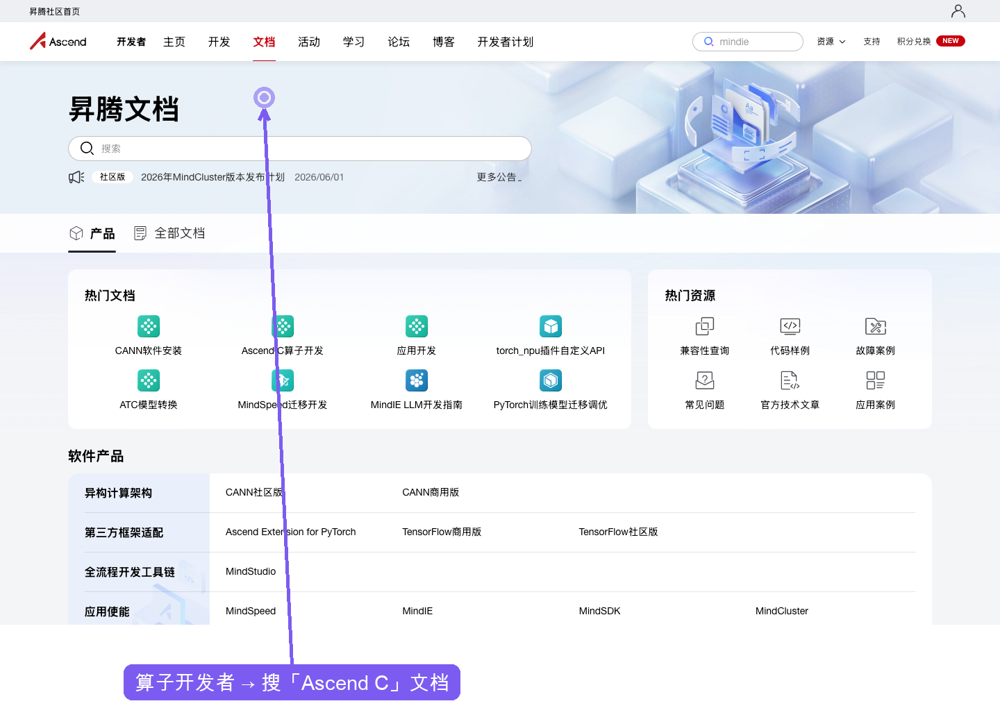
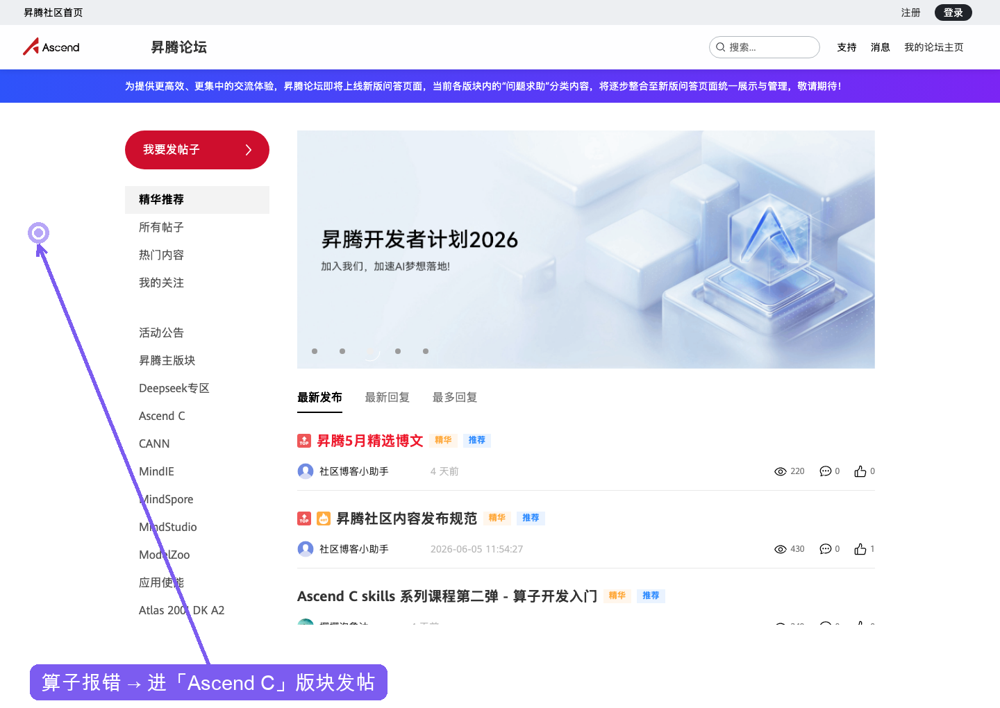
必要时再到论坛寻找同类经验从全量开发过程取出同一片段，先读懂谁向社区请求知识、谁回到社区核对。
把同一类往返放进开发全过程，才看得到问题集中在哪个任务阶段。
开发者不是孤立地搜索问题，而是在完整任务中持续推进、受阻并核验。
将完整开发过程按业务目标拆成七阶段，再从高频、关键的知识需求中抽取五项任务。
①–⑩ 采用 1–5 可解释档位：5 表示几乎不阻碍 AI 作答，3 表示需要拼接或判断，1/2 表示会明显拖累答案可靠性。随后再计算官方、第三方、模型自带知识三条证据链。
官方链 OFF = (①/5)×(②/5)×(③/5)
第三方链 SEC = (⑤/5)×(⑥/5)
模型先验链 OWN = ⑦/5官方链是“搜得到、抓得到、正文够用”串起来；第三方链是“数量够、可信度够”共同成立。
K = 1-(1-OFF)(1-SEC)(1-OWN)OFF / SEC / OWN 分别对应官方链、第三方链、模型先验链；只要有一条足以支撑答案，就能形成可靠回答。
综合 = K × (0.7+0.3×④/5) × (0.9+0.1×⑧/5)30% 用在版本因子，10% 用在成本因子；⑧先用检索轮数、成功抓取、抓取失败算出成本档位，再进入综合公式。⑨⑩保留为答案结果说明。
--diff 一键重跑核对。score_metrics.py 公式算出，第三方可复现。setup.py 和注册代码。msOpGen / aclnn）？给出完整步骤。Tiling 怎么写、TilingData 怎么定义和传递？compute-sanitizer 定位是哪一行越界？msSanitizer / 算子内存检测定位是哪一行？torch.ops 能调（TORCH_LIBRARY / dispatcher）？aclnn 接口并集成进 torch_npu / PyTorch 让框架能调？msaccucmp / 精度比对 / dump 定位？即使有 AI 辅助，开发者仍会在检索受阻、答案复核、关键决策等场景依赖社区内容。社区在这里既包括官方文档，也包括第三方经验、样例仓和论坛讨论。
落地官网 → 进开发者门户 → 配 CANN 环境 → 写 Ascend C 算子 → 编译跑通 → 调试求助 → 进阶。
| 旅程阶段 | L1 找入口 | L2 上手引导 | L3 配环境 | L6 调试求助 | L7 进阶生态 | 贯穿能力 | ||||
|---|---|---|---|---|---|---|---|---|---|---|
| 触点 | 门户 / 导航触点 1.1b / 1.2 | 学习路径 / HiDevLab触点 3.2 | 账号登录触点 4.2 | Toolkit 下载触点 4.3 | 社区 / 论坛触点 6.1 | 技术支持触点 6.2 | FAQ 自助触点 6.3 | ModelZoo 引导触点 5.2 | 博客 / 案例触点 6.4 | 英文访问触点 1.4 |
| 昇腾 | 78 门户导航入口 |
82 学习路径 |
64 账号登录流程 |
21 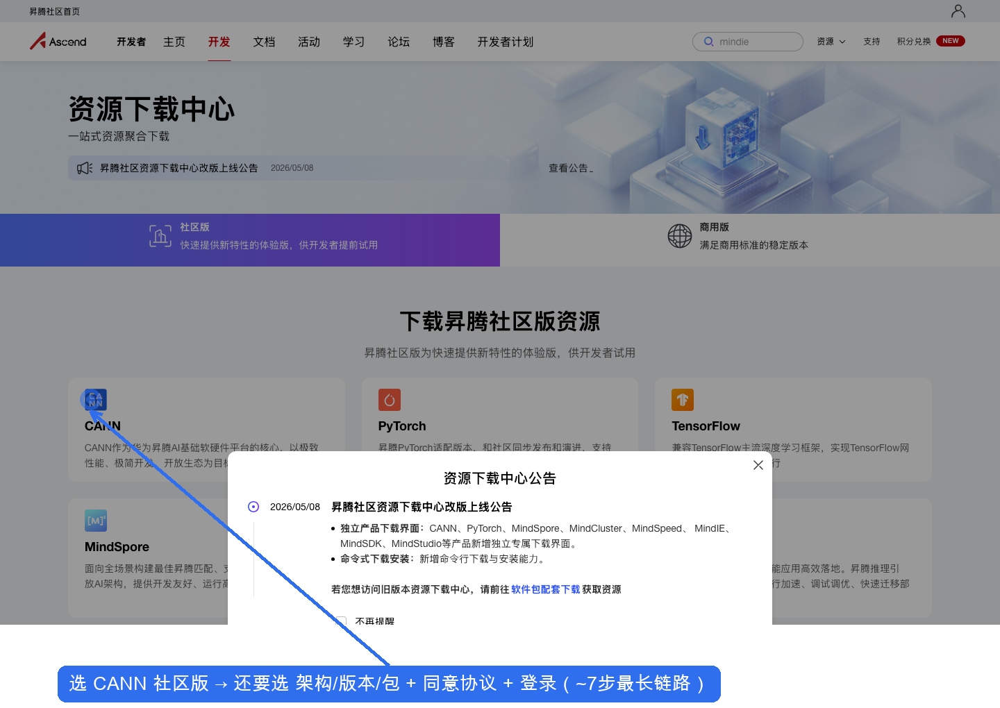 Toolkit 下载页 |
73 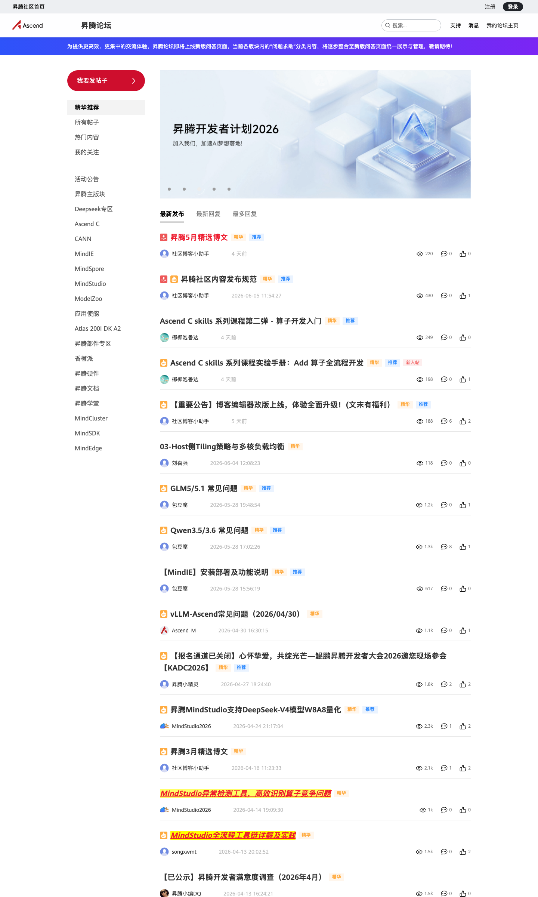 社区 / 论坛 |
75 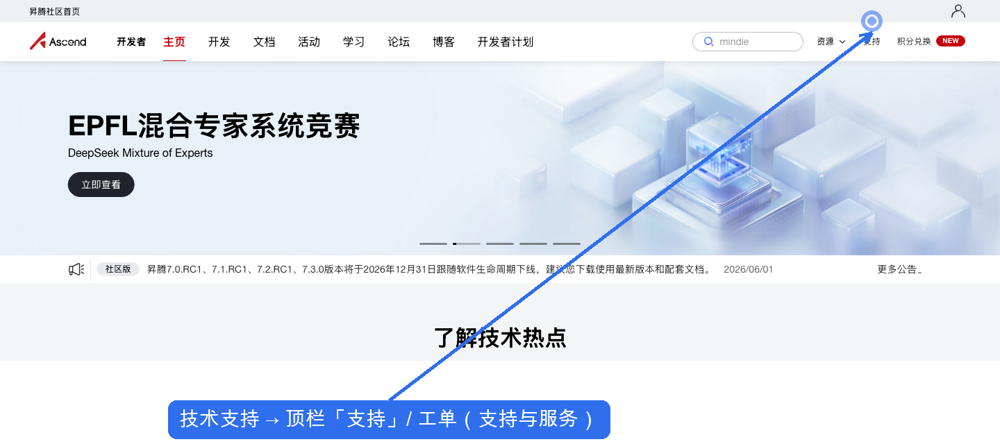 技术支持入口 |
85 FAQ 自助 |
81 ModelZoo 引导 |
75 博客 / 案例页 |
75 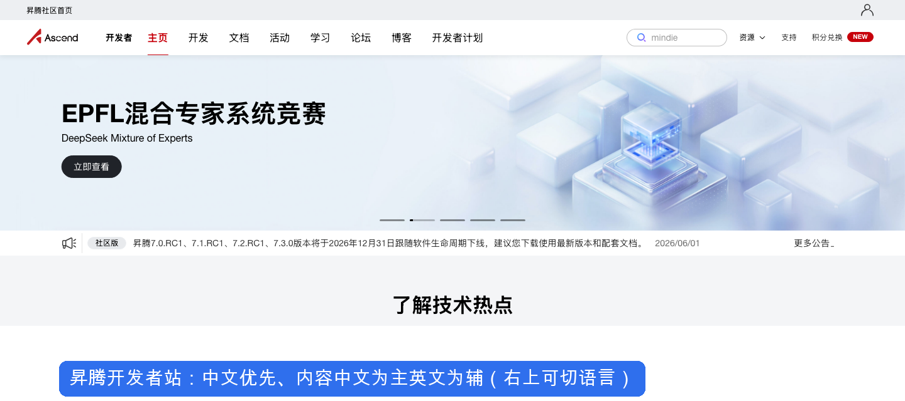 英文入口 |
| NVIDIA | 77 开发者导航 |
72 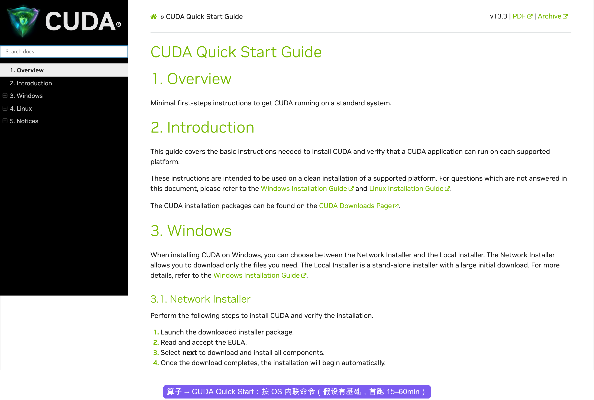 Quick Start |
80 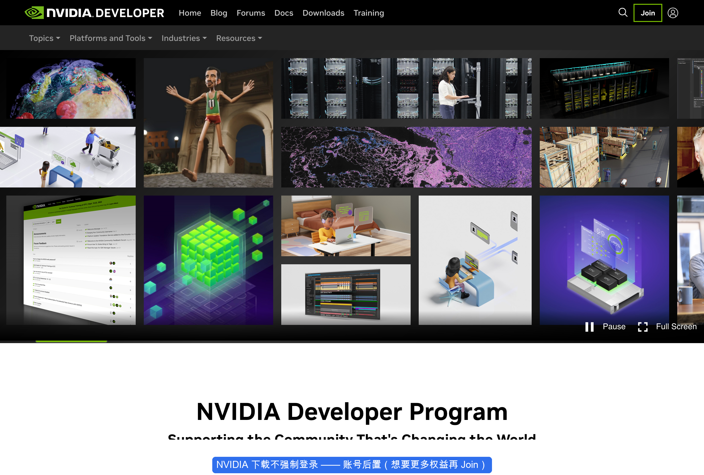 账号 / 开发者计划 |
87 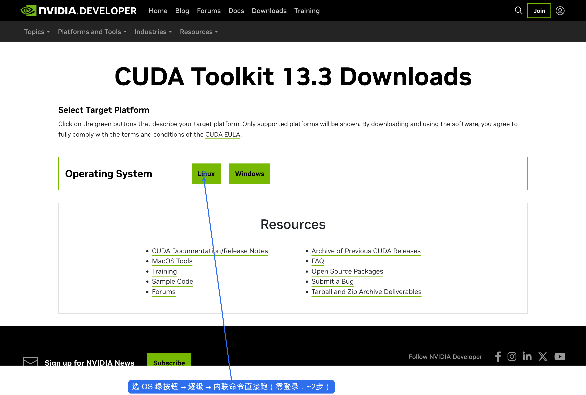 CUDA 下载页 |
88 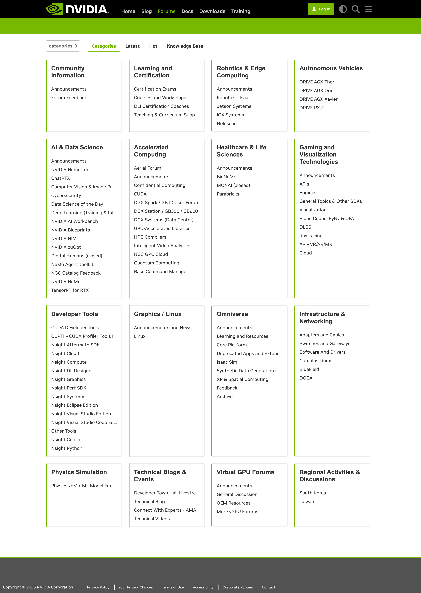 开发者论坛 |
76 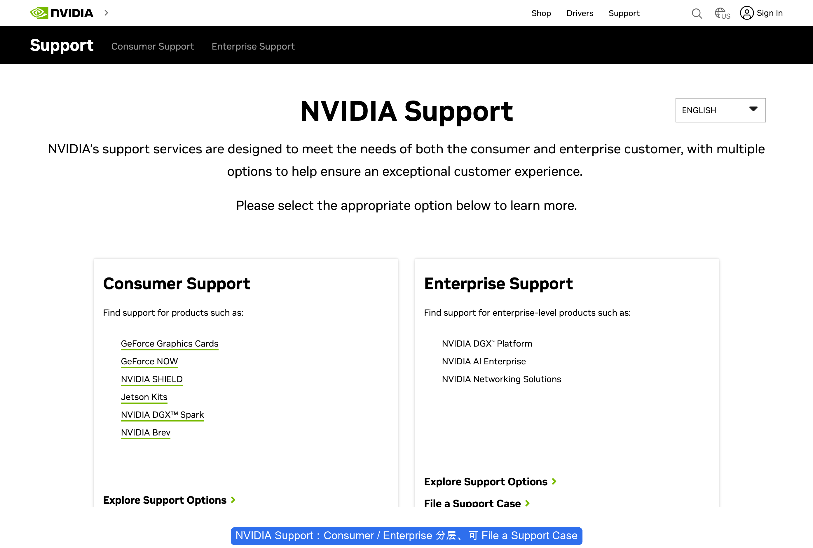 技术支持入口 |
63 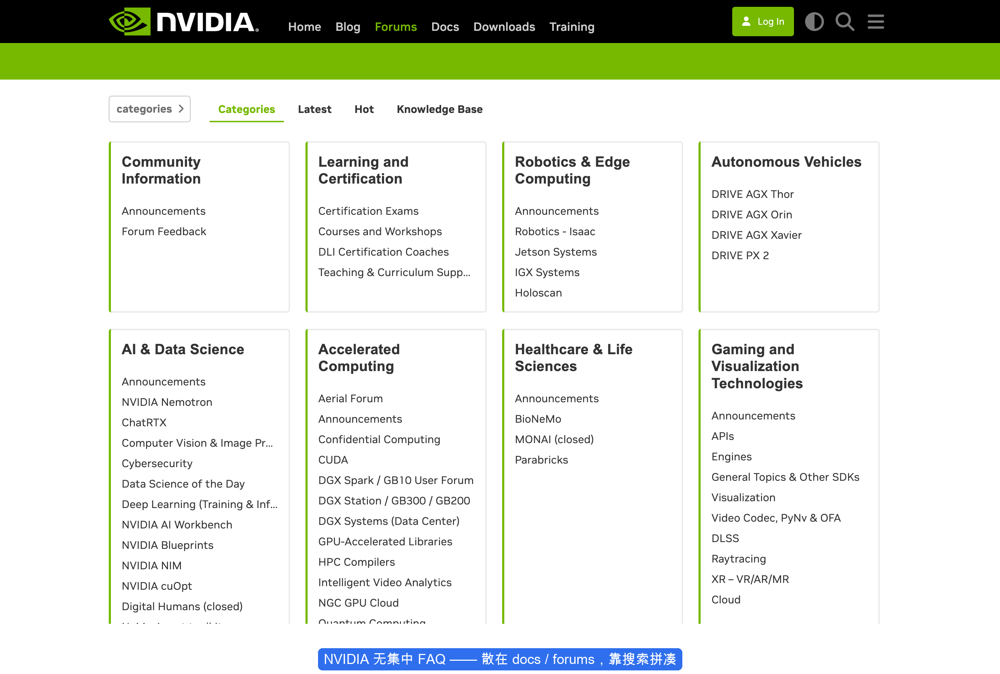 论坛问答 |
79 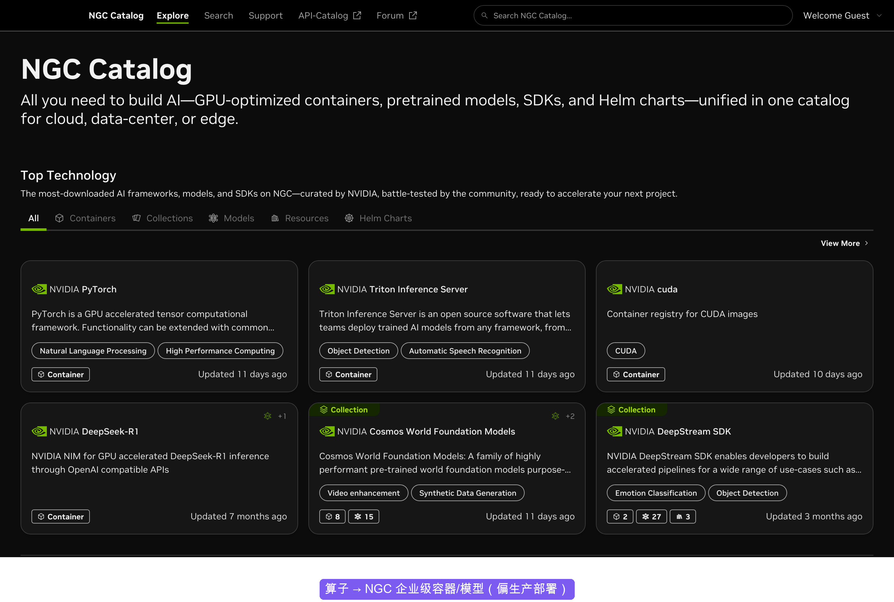 NGC 资源 |
92 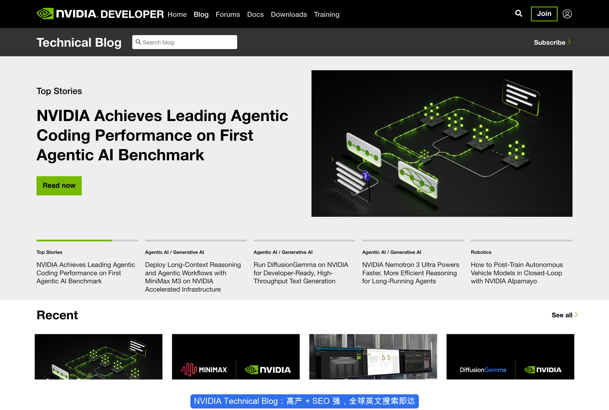 NVIDIA 博客 |
75 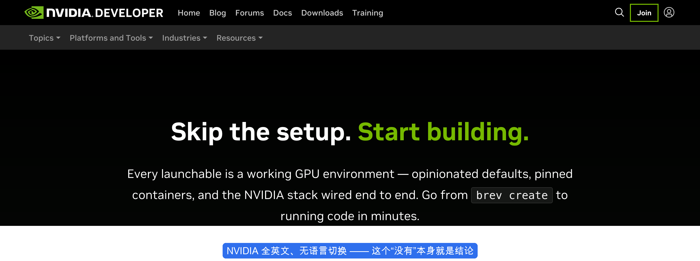 英文站点 |
| 差值 | +1 | +10 | −16 | −66 | −15 | −1 | +22 | +2 | −17 | 0 |
| 摩擦来源 | 入口显眼度场景直达任务词回流 | 长板未前置HiDevLab 衔接默认起步弱 | 先登录再试用海外账号试用中断 | 登录、协议、包选择版本配套手判 | 游客可读索引收录高频问题沉淀 | 入口分层文档导流工单回流 | FAQ 亮点上下文嵌入论坛联动 | 三步引导CANN 复用在线实验联动 | 第一屏命中英文案例顶部直达入口 | 语言入口账号注册论坛可读 |
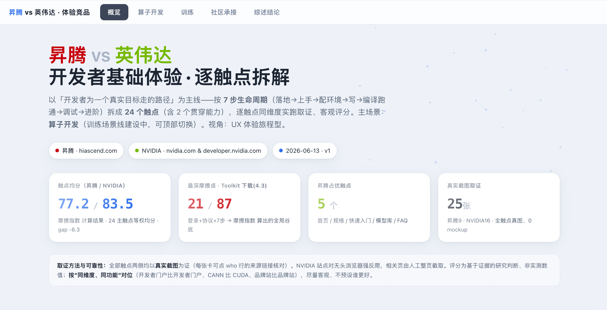
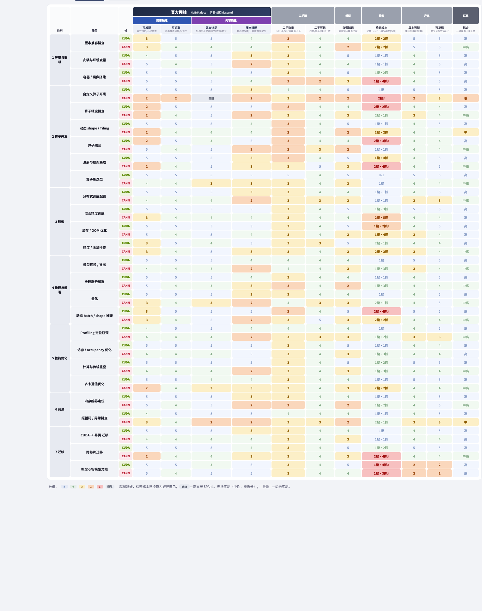
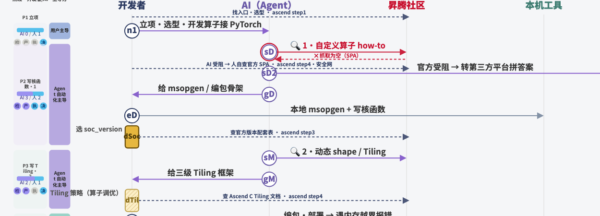
# ai-usability-benchmark
一份可分享的 Claude Code Skill：衡量「一个会实时检索的 AI 助手，
回答某个生态的开发任务时，知识从哪来、可用性如何，
与另一个成熟生态相比差在哪」。
在若干开发者任务上，对两个生态各实测检索一遍（web_search / web_fetch），
按统一的 11 项指标量化打分、记录每一步、产出可下钻的对照矩阵。
默认对照：受测生态 = CANN（昇腾），基线生态 = CUDA（NVIDIA）。
视角是「会检索的 AI 助手」，不是「这个栈好不好用」。
AI 助手只能搜→抓→读正文→拼答案。
# Journey Touchpoint Analysis
Use this skill to turn "pretend I am a user trying to complete a task on this site"
into a rigorous, visual report: journey map, touchpoint cards, annotated screenshots,
scoring, heatmap, and recommendations.
This skill was distilled from the Ascend vs NVIDIA developer-portal analysis.
Core Output: Scenario and persona; Lifecycle journey; Touchpoint inventory;
Evidence: real screenshots and source URLs for both sides of a comparison;
Annotated click path: arrows and labels showing where the user actually clicks or looks;
Scoring: per-touchpoint scores based on explicit friction metrics, not vibes.